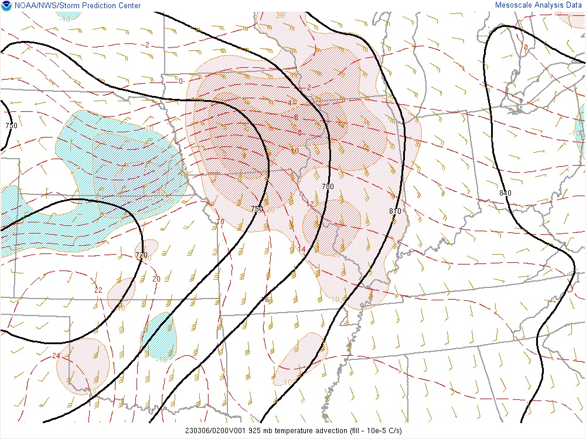
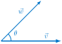
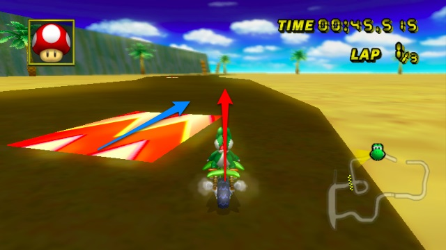
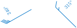
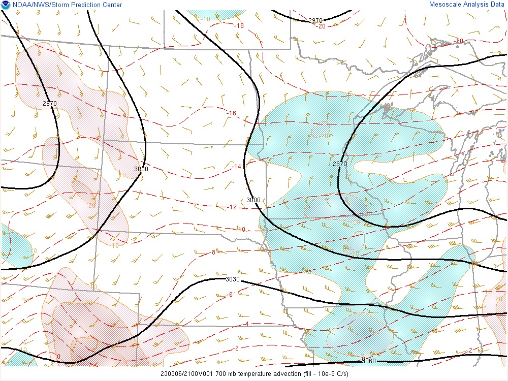

How can we measure how much two vectors are aligned?
How can we quantify advection?
Advection is the process of transport of an atmospheric property solely by the mass motion of the atmosphere. One may also wish to think of it as the rate of change of the value of the advected property at a given point.
Temperature is an example of an advected property. Winds transport air parcels from regions of one temperature to regions of a different temperature. In the process, air masses are warmed or cooled. Figure 4.2.1 illustrates temperature advection at 925 mb over the central United States. Regions shaded in red are being warmed the most; regions shaded blue are being cooled the most. The rate at which temperature is being advected (or changed) depends on two factors - the temperature gradient and the wind velocity at that location. For example, in central Iowa, it appears that winds are blowing from the Southeast. Since there is a strong temperature gradient that points north, warm-air advection will occur. Conversely, in southeast Nebraska, we see that winds are blowing from the northeast. Since the temperature gradient points north, cold-air advection will occur.

Figure4.2.1.Temperature advection over the central United States. (Source: spc.noaa.gov 61
https://spc.noaa.gov
).
Using vectors to quantify both the temperature gradient \(\vec{u}_T\) and the horizontal wind velocity \(\vec{v}_H\) allows a more precise measure of advection. What is needed is some mechanism that tells us (a) how aligned these two vectors are and (b) the strength (i.e. the magnitude) of the combined vectors. A dot product of two vectors will do this.
The dot product is a measure of the amount one vector goes in the direction of another. It is useful to think of it as a way to measure the similarity of two vectors.
Definition4.2.2.Geometric Definition of Dot Product.
For any two vectors \(\vec{v} = v_1\vec{i} + v_2\vec{j} + v_3\vec{k}\) and \(\vec{w} = w_1\vec{i} + w_2\vec{j} + w_3\vec{k}\text{,}\) we define
where \(\theta\) is the angle between \(\vec{v}\) and \(\vec{w}\) and \(0 \leq \theta \leq \pi\text{.}\)

Figure4.2.3.The geometric definition of the dot product: \(\vec{v} \cdot \vec{w} = \|\vec{v}\| \|\vec{w} \| \cos\theta\text{.}\)
Notice that the dot product of two vectors is a number. When two vectors \(\vec{v}\) and \(\vec{w}\) have the same direction (i.e. \(\theta=0\)), \(\vec{v} \cdot \vec{w}=\| \vec{v}\| \|\vec{w}\|\text{.}\) That is, we simply multiply the lengths of the two vectors. On the other hand, when the vectors are pointing in opposite directions (i.e. \(\theta=180^{\circ}\)), we have \(\vec{v} \cdot \vec{w}=-\| \vec{v}\| \|\vec{w}\|\text{.}\) This yields the opposite of the product of the two lengths. Angles \(\theta\) between \(0\) and \(180^{\circ}\) produce values between these extremes. The more that vectors \(\vec{v}\) and \(\vec{w}\) are aligned, the closer the dot product is to the positive extreme \(\| \vec{v}\| \|\vec{w}\|\) and the less aligned \(\vec{v}\) and \(\vec{w}\) are, the closer the dot product is to the negative extreme, \(-\| \vec{v}\| \|\vec{w}\|\text{.}\)
Suppose \(\vec{v} = 3\vec{i}\text{,}\)\(\| \vec{w} \| = 4\text{,}\) and \({\vec{w}}\) makes a \(60^\circ\) angle with the positive \(x\)-axis as shown in Figure 4.2.5. Calculate \({\vec{v}} \cdot \vec{w}\) using the geometric definition.
The geometric and algebraic definitions can be shown to give the same result by using the law of cosines. For now, we let the calculation in Checkpoint 4.2.7 convince us.
Checkpoint4.2.7.Computing a Dot Product - Part II.
Suppose \(\vec{v} = 3\vec{i}\text{,}\)\(\| \vec{w} \| = 4\text{,}\) and \({\vec{w}}\) makes a \(60^\circ\) angle with the positive \(x\)-axis as shown in Figure 4.2.5. Calculate \({\vec{v}} \cdot \vec{w}\) using the algebraic definition.
Answer.
Resolving vector \(\vec{w}\) gives \(\vec{w} = 4\cos(60^{\circ})\vec{i} + 4\sin(60^{\circ})\vec{j} = 2\vec{i} + 2\sqrt{3}\vec{j}\text{.}\) It follows that \(\vec{v} \cdot \vec{w} = 3 \cdot 2 + 0 \cdot 2\sqrt{3} = 6\text{,}\) just as in Checkpoint 4.2.4.
Activity3.Angles and Signs.
Plot the vector \(\vec{u} = \vec{i} + 3\vec{j}\) on the grid in Figure 4.2.8.
For each of the following vectors \(\vec{v}\text{,}\) plot the vector on the grid in Figure 4.2.8 and then compute the dot product \(\vec{u} \cdot \vec{v}\text{.}\)
\(\displaystyle {\vec{v}} = 3\vec{i} + 2\vec{j}\)
\(\displaystyle {\vec{v}} = 3\vec{i}\)
\(\displaystyle {\vec{v}} = 3\vec{i} -\vec{j}\)
\(\displaystyle {\vec{v}} = 3\vec{i} - 2\vec{j}\)
\(\displaystyle {\vec{v}} = 3\vec{i} -4\vec{j}\)
Based upon the previous part of this activity, what do you think is the sign of the dot product in the three cases shown in Figure 4.2.9.
\(\vec{v}=-3\vec{j}-5\vec{k}\) and \(\vec{w}=3\vec{j}\) so that \(\vec{v} \cdot \vec{w} = -9.\)
Example4.2.14.Mario Kart and Dot Product.
If you have ever played a game called Mario Kart, you are well-positioned to understand the dot product in action. To this end, in Mario Kart, there are ``boost pads" that increase your speed. Imagine the red vector in Figure 4.2.15 is your speed (\(\vec{i}\) and \(\vec{j}\) direction), and the blue vector is the orientation of the boost pad (\(\vec{i}\) and \(\vec{j}\) direction). Larger numbers are more power. How much boost will you get?

Figure4.2.15.Understanding the dot product through Mario Kart (Source: betterexplained.com 63
Mathematically, temperature advection is the negative of the dot product of the horizontal wind vector \(\vec{v}_H\) and the temperature gradient \(\vec{u}_T\text{.}\) That is,
The negative sign is due to the fact that the temperature gradient always points in the direction of higher temperatures. However, air masses warm (positive advection) when the wind \(\vec{v}_H\) is generally pointing in the direction from higher temperatures to lower temperatures.
We can use this to our advantage in thinking about advection as a rate of change. Then, we see that
That is, the forcast temperature at a given location is the current temperature combined with the temperature change at that location due to advection. Let’s investigate this in 1 and 2 dimensions.
In one dimension, the horizontal wind vector and the temperature gradient are completely aligned. This allows us to treat \(\vec{v}_H\) and \(\vec{u}_T\) as scalars:
where \(| v_{curr} |\) is the speed of the horizontal wind and the negative sign has been absorbed into the temperature gradient \(\vec{u}_T = \frac{T_{downwind} - T_{upwind}}{\Delta x}\text{.}\)
Example4.2.16.One-Dimensional Advection.
The current temperature in Jackson, MS, is \(21^{\circ}C\text{.}\) In Memphis, TN (318 km to the north) the current temperature is \(15^{\circ}C\text{.}\) The average wind between the two cities is 37 km/hr from the north. Suppose that the only process affecting temperature is advection and assume the wind stays constant. We can now determine the temperature in Jackson in 6 hours.
Mathematically, we model the current wind using a one-dimensional vector (e.g. a scalar), \(v_{curr}\text{.}\) We know that \(| v_{curr} | = 37\) km/hr. So,
where \(\vec{v}_H\) is the horizontal wind vector and \(\vec{u}_T\text{,}\) the horizontal temperature gradient, is also a vector.
Example4.2.17.Two-Dimensional Advection.
Figure 4.2.18 shows current temperatures observed near Rochester, MN. Suppose the horizontal wind vector is \(\vec{v}_H = (36 \ {\rm{km/hr}})\vec{i} -(11 \ {\rm{km/hr}})\vec{j}.\)Figure4.2.18.Temperatures near Rochester, MN. Hammond is 35 km north of Rochester. Stewartville is 21 km south of Rochester. Owatonna is 66 km west of Rochester. Winona is 87 km east of Rochester.
Advection may refer to more than temperature advection. In general, advection refers to the horizontal transport of some property of the atmosphere or ocean, such as heat, humidity or salinity. For example, moisture advection is the horizontal transport of water vapor by the wind. The advection of dew point can be thought of as moisture advection - found by the dot product of the horizontal wind vector \(\vec{v}_H\) and the dewpoint temperature gradient \(\vec{u}_{T_d}\text{.}\)
ExercisesExercises
1.Calculating the Dot Product Geometrically.
2.An Algebraic Dot Product.
3.Calculating the Angle Between Two Vectors.
4.Calculating the Dot Product.
5.Dot Products of Basic Vectors.
Compute each dot product of basis vectors.
\(\displaystyle \vec{i} \cdot \vec{j}\)
\(\displaystyle \vec{j} \cdot \vec{k}\)
\(\displaystyle \vec{k} \cdot \vec{i}\)
\(\displaystyle \vec{i} \cdot \vec{i}\)
Answer.
0
0
0
1
6.Product of Wind Vectors.
Compute \(\vec{v} \cdot \vec{w}\text{.}\) What are the units in the resulting value? Be sure to include units.

Figure4.2.19.Wind vectors \(\vec{v}\) and \(\vec{w}\) for Exercise 4.2.6.
Figure 4.2.20 shows regions of cold-air and warm-air advection at a height of 700 mb.

Figure4.2.20.Temperature advection at 700 mb over the central United States. (Source: spc.noaa.gov 64
https://spc.noaa.gov
).
On approximately which isotherm is Saint Cloud, MN located? Are the winds parallel or perpendicular to this isotherm here?
Estimate the angle between the temperature gradient \(\vec{u}_T\) and the horizontal wind vector \(\vec{v}_H\) at Saint Cloud, MN. If the angle was changed by \(30^{\circ}\text{,}\) how would temperature advection at Saint Cloud be impacted?
Answer.
\(-14^{\circ}C\text{;}\) the winds are perpendicular to this isotherm.
The angle between the temperature gradient and the horizontal wind appears to be close to zero (the temperature gradient points south). This angle maximizes the temperature advection for the given wind speed and temperature gradient. If the angle differed by \(30^{\circ}\text{,}\) there would be less temperature advection at this location.
8.Advection in New York.
Figure 4.2.21 shows temperatures observed at four New York stations at 2000 UTC 21 February 2018 as a strong cold front was moving through the area. Figure4.2.21.Temperature readings near Glenville, NY used in Exercise 4.2.8. Edinburg is 65 km north of Voorheesville. Schaghticoke is 87 km east of Oppenheim.
Calculate the temperature gradient vector \(\vec{u}_T\) at Glenville, NY. Be sure to include appropriate units.
Figure 4.2.22 shows horizontal isotherms near Sartell, MN. The distance between these contours is \(100\) nautical miles (nm). In addition, the horizontal wind vector \(\vec{v}_H\) is from \(330^{\circ}\) at a speed of \(20 \ {\rm{knots}}\text{.}\)
Figure4.2.22.Isotherms near Sartell, MN used in Exercise 4.2.9.
Find a resolution of the temperature gradient vector \(\vec{u}_T\) at Sartell, MN.
Find a resolution of the horizontal wind vector \(\vec{v}_H\text{.}\)
Estimate the temperature advection at Sartell, MN. Be sure to include appropriate units in your response.
Answer.
Remember that the temperature gradient is always pointed in the direction of the steepest increase. So the gradient in this case will clearly point in the negative \(\vec{j}\) direction.
Figure 4.2.23 shows current temperatures observed near Cold Spring, MN.
Figure4.2.23.Current temperatures at and near Cold Spring, MN for Exercise 4.2.10. Avon is 21.2 km north of Cold Spring. Watkins is 16.5 km south of Cold Spring. Richmond is 8.3 km west of Cold Spring. Rockville is 8.6 km east of Cold Spring. The horizontal wind vector \(\vec{v}_H\) is shown in Figure 4.2.24. Figure4.2.24.Horizontal wind vector \(\vec{v}_H\) near Cold Spring, MN.
The horizontal wind vector can be written as \(u\vec{i} + v\vec{j}\text{.}\) Determine the values of \(u\) and \(v\) (in knots). Then, convert each of these components to units of km/hr.
Compute the temperature advection at Cold Spring. What will be the temperature at Cold Spring 30 minutes from now?
Note that this is negative (cooling). This is mainly since Richmond is so much closer than Avon. So, in 30 minutes (i.e., 0.5 hours), the temperature in Cold Spring will be